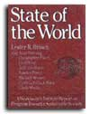

LAST LAUGH
State of the World 1989: some good news and some bad news
Will the United States and the Soviet Union agree to a "greenhouse glasnost"?
AND THEY'RE HARDER TO TAKE CARE, according to the recently released State of the World 1989 from Lester Brown's Worldwatch Institute. Reading the entire 243-page report is like taking a short course in earth medicine: a fine way to gain a balanced view of current global problems and possibilities.
Here are a few "snapshot" examples:
In March 1988, more than 100 international experts reported that the ozone layer around the entire globe was eroding much faster than any previous model had predicted. Indeed, from 1969 to 1986, atmospheric ozone decreased between 1.7 and 3% in the heavily populated band of the Northern Hemisphere that encompasses virtually all of continental U.S. and Europe (winter losses ranged from 2.3 to 6.2%).
An astonishing 8 million hectares of rain forest-an area about the size of Austria were burned in 1987 in the Amazon basin alone.
Poland recently declared five villages unfit for human habitation due to the extremely high levels of heavy metals in the air and soil.
Humanity added 5.5 billion tons of carbon to the atmosphere in 1988. The United States was the largest contributor.
Industrial countries are dumping waste in Third World nations. Some 3,800 tons of Italian toxic waste were illegally dumped in the small Nigerian port town of Koko. The Nigerian government now plans to evacuate Koko's 5,000 residents.
Between 1984 and 1988, per capita world grain production fell 14%, back to 1970 levels.
The new and growing category of "environmental refugees"--people driven from their homes by environmental, not political, disaster-is estimated to total at least 10 million people. These refugees will soon outnumber all other types.
Fully 35% of the earth's land surface is in various stages of desertification.
Some 22 wars have been raging in the '80s, more than in any previous decade in recorded military history. However, military aggression is becoming less successful: Only one out of 10 aggressors has won its war (the ratio used to be four out of 10).
China plans to more than double its use of coal, which could push it past the United States and the Soviet Union as the world's leading carbon emitter.
The grain used in producing a quarter-pound hamburger could feed a person in a low-income country for two days.
Last October, President Jose Sarney of Brazil announced a 90-day suspension of the tax breaks and other incentives that had spurred the clearing and burning of large tracts of Amazon rain forest.
Nigeria became the first African country to call for a limit on family size.
The Soviet Union called for a massive international effort to shift resources from military security to environmental security.
The European Economic Commission is considering an environmental freedom-of-information proposal, ensuring public access to key environmental facts.
Nineteen countries, including the Soviet Union (but not the United States), have committed themselves to cut their sulfur dioxide emissions by 30% by 1993. Twenty-four nations signed a 1988 agreement to freeze nitrogen oxide emission levels.
The Grameen Bank of Bangladesh has distributed over 400,000 tiny loans, averaging $60 apiece, to help individual bootstrap enterprises. Local peer pressure takes the place of collateral: Later applicants don't get loans unless earlier ones meet their weekly payments.
Scientists from the Soviet Union and the United States have begun "greenhouse glasnost," an effort to collaborate on coping with global warming.
In the remote Brazilian state of Acre, 30,000 rubber tappers have used nonviolence and lobbying to save their forests from clear-cutting.
Energy-efficiency improvements in the next 20 years could make a 3-billion-ton difference in the annual amount of carbon being released to the atmosphere. No other approach offers as cost-effective an opportunity for limiting carbon emissions.
Virginia-based Applied Energy Services is voluntarily helping fund a reforestation project in Guatemala with the explicit intent to offset the carbon emissions resulting from a new cogeneration power plant it's building in Connecticut.
Governments could levy a "carbon tax" on fossil fuels, with the tax corresponding to the amount of carbon in each fuel. This would hit coal hardest and make renewable energy sources much more competitive.
Three global-warming bills were introduced in the U.S. Congress in 1988.
In 1987 the Conservation Reserve Program reduced U.S. soil losses by 460 million tons, the greatest one-year reduction on record for any country.
The final message of State of the World is best summed up by Smithsonian biologist Thomas Lovejoy: "I am utterly convinced that most of the great environmental struggles will either be won or lost in the 1990s. By the next century it will be too late."
To obtain a copy of State of the World 1989, send $9.95 to Worldwatch Institute, 1776 Massachusetts Ave. NW, Washington DC 20036.
|
 |
|
|